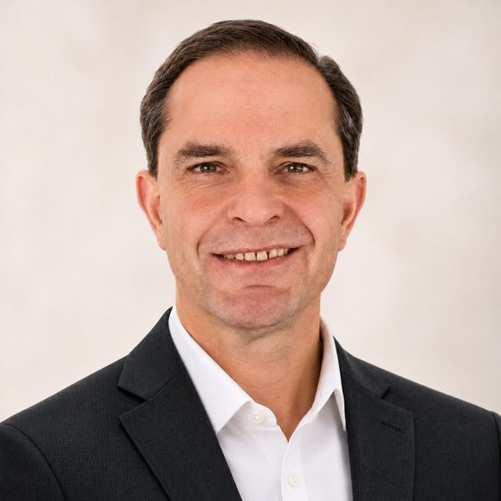

Implementación Odoo con método de gran ERP
Gobierno del proyecto, gestión de riesgos, migración de datos, puesta en marcha y adopción. El rigor de los grandes proyectos con los plazos de Odoo.
Miembros de la OCA · Localización chilena de Odoo
Somos socios senior que han dirigido proyectos en SAP, JD Edwards, Oracle y Microsoft Dynamics. Hoy implementamos Odoo y desarrollamos su localización chilena en la OCA. Resolvemos problemas de negocio, no solo instalamos módulos.
Servicios
Cada servicio parte por el proceso y el resultado esperado. El software viene después.
Gobierno del proyecto, gestión de riesgos, migración de datos, puesta en marcha y adopción. El rigor de los grandes proyectos con los plazos de Odoo.
Facturación electrónica, contabilidad y obligaciones tributarias, de la mano de quienes desarrollan los módulos de la localización chilena en la OCA.
Rediseñamos procesos y conectamos Odoo con SAP, Dynamics, WMS, eCommerce, POS y APIs. Tu sistema no necesita empezar de cero.
Business case, RFP, evaluación de proveedores y dirección de proyectos ERP que se desviaron en plazo, costo o alcance.
Para gerencia y directorio
Un ERP es una decisión de negocio antes que una decisión técnica. Presentamos costos, riesgos, plazos y retorno con la claridad que necesitan la gerencia general, el directorio y los accionistas, y respondemos por el resultado.
Experiencia
Nuestros socios han dirigido proyectos para Falabella, Ripley, Grupo Éxito, Cruz Verde, Lafarge, Kinross, COPEC y BD Latinoamérica, entre otras, desde Deloitte, Oracle, Manhattan Associates y Blue Yonder.
Casos de éxito
Retail, logística, inmobiliaria, alimentos, salud y servicios. Distintas industrias, el mismo método.
Retail · Librerías
Omnicanalidad para 30 tiendas, marketplaces y SAP.
OMS y POS sobre Odoo, integración con los marketplaces de Falabella y Cencosud, pagos con Mercado Pago, integración con SAP S/4HANA e infraestructura en AWS.
Logística y transporte
Una sola operación comercial y financiera para cinco países.
CRM, proyectos, compras y facturación sobre Odoo 18 con la localización chilena, para una operación en Chile, Argentina, Paraguay, Uruguay y Brasil. 25 casos de uso validados sin brechas.
Alimentos · Food service
Compras inteligentes: proveedores evaluados y presupuesto bajo control.
Proceso de compras en Odoo con evaluación de proveedores, control presupuestario e inventarios, para una operación de food service, retail y exportación.
Inmobiliaria · Rentas
Arquitectura y procesos de cobranza para más de 250 unidades en renta.
Arquitectura y diseño empresarial, y definición de los procesos de cobranza sobre Odoo, para una inmobiliaria de propiedades comerciales e industriales en renta desde 1991.
Retail especializado · Terminaciones
Venta móvil en la sala de ventas.
El vendedor cotiza y cierra la venta junto al cliente, sin volver al mesón, con un proceso de venta móvil sobre Odoo.
Servicios de RR.HH.
Del primer contacto a la cobranza en un solo sistema.
CRM, ventas, facturación y cobranza sobre Odoo para una empresa de evaluaciones cognitivas y de personalidad basadas en evidencia.
Salud · Insumos médicos
Costo real de importación y trazabilidad de cada insumo.
Prueba de concepto en Odoo del proceso de importaciones, con costo de internación (landed cost) e inventario con trazabilidad de insumos médicos.
Cómo trabajamos
Escuchamos tu situación, revisamos sistemas y procesos e identificamos los cuellos de botella críticos.
Una hoja de ruta que aprovecha lo que ya tienes, con opciones reales y sus costos explicados.
Los socios trabajan directamente en el proyecto, con iteraciones cortas y comunicación directa.
Después de la puesta en marcha medimos, ajustamos y hacemos crecer el sistema con tu operación.
Equipo
Entre los tres suman décadas dirigiendo proyectos ERP para empresas líderes de Chile y Latinoamérica. Hoy llevan esa experiencia a Odoo.
Socio Consultor · Arquitectura de software y Odoo
Ingeniero Informático UCM, Magíster en TI UFTSM. Más de 25 años en tecnología. Mantiene la localización chilena de Odoo (l10n-chile) en la OCA y lidera su migración a Odoo 18 con certificación SII. Fue CIO de Galilea durante once años, donde rediseñó más de 60 procesos, y CTO de Techdigital.
Perfil en LinkedIn
Socio Consultor · Proyectos, retail y supply chain
Ingeniero Comercial y Magíster en TI de la UC, con más de 30 años en sistemas empresariales. En Deloitte dirigió la línea de servicios Oracle; después implementó soluciones de órdenes y bodegas para Falabella, Grupo Éxito y Ripley, y hoy dirige proyectos Blue Yonder WMS.
Perfil en LinkedInSocio Consultor · Dirección de proyectos ERP y PMO
Ingeniero Civil de la Universidad de Chile, especialista en selección e implementación de ERP, SCM, CRM y BI. Ha dirigido proyectos JD Edwards, Oracle y Dynamics en Chile, Ecuador, Honduras y México, y proyectos regionales para BD en Latinoamérica.
Perfil en LinkedInPor qué Iternova
Conversemos
En 45 minutos un socio revisa tu situación y te dice con franqueza qué conviene hacer.